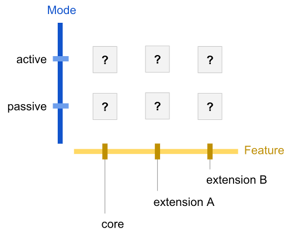
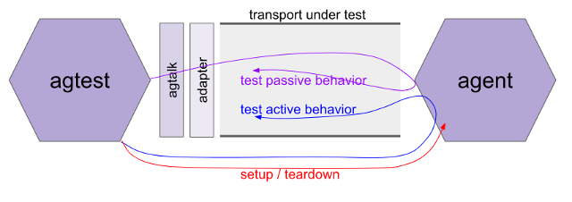

- Name: agent-test-suite-interface
- Author: Daniel Hardman
- Start Date: 2018-05-17
- HIPE PR: (leave this empty)
- Jira Issue: (leave this empty)
HIPE 0015-agent-test-suite-interface¶
Defines the interface (behavioral contract, mental model, procedure, harness) of test suites that evaluate interoperability of Indy agents.
Related HIPEs¶
This is a test suite interface HIPE. It is intended to specify the common behavioral contract of one or more test suite content HIPEs that define actual tests. (These two types of spec are divided so they can be versioned and standardized separately.)

Motivation¶
The need for interoperability in SSI ecosystems is profound–much of the value of SSI centers on interaction, and interaction requires different pieces of technology to understand one another.
We will likely write multiple HIPEs that touch on aspects of agent interaction–but implementers need an oracle against which they can verify compliance with specs and community practice. This HIPE creates such an oracle.
Tutorial¶
Background Concepts¶
An agent is a piece of technology that holds keys and operates on the digital landscape in behalf of its owner. Agents are not shared services; they work for a single master. Agents can be embodied in mobile apps, daemons, hardware, enterprise service buses, and many other form factors.
Agents interact by sending and receiving messages. They can be viewed as black boxes–as far as any other party in the ecosystem is concerned, their implementation details are irrelevant. Only their sending and receiving can be observed. This suggests that message interactions are the locus of interoperability concerns, and the major thing to evaluate in a test suite.
How messages are transported may vary by circumstances–some agents using http, others using Bluetooth, and still others using raw sockets or smtp or proprietary protocols. Interoperability does depend to some extent on intersecting transports, so our test suite needs to probe that–but we should be more interested in the format of messages, the semantics around their sending and receiving, and the behaviors they evoke.
The agent evaluated by a test suite is called the tested agent.
Characterizing Interoperability¶
Some agents have very modest charters–listen for a signal and take a single hard-coded action, maybe. Or just emit a single piece of data on an interval. Other agents may be very rich, with sophisticated AIs and policy engines, a broad charter, and an array of communication strategies and partners.
Given this variety, the test suite evaluates compliance in a two-dimensional matrix. One axis is the mode of operation – is the agent actively initiating action, or passively listening, or both? This embodies in agent space the human experience that many of us know, where it is possible to speak without listening, or to understand a language without being able to speak it. The other axis holds different feature clusters – which functional areas does the agent target? The set of feature clusters will likely grow over time.

Any given intersection in this matrix represents an interop junction. Each junction may receive an interop score. The possible scores are:
- interoperable: Passes all tests associated with this junction. Any two agents that are interoperable at a given junction should be able to interact freely within that junction.
- constrained: Passes enough tests to enable a meaningful subset of interactions. The word “meaningful” is deliberately vague; this score always requires explanation about which subset is possible. Two agents that are both constrained at a junction may or may not find useful common ground.
- divergent: Doesn’t pass enough tests to have meaningful interop at this junction. This is the assumed or default score for all agents on all junctions, until proved otherwise by the test suite–and when results are reported, any junctions not described should be assumed to be divergent for that agent.
The set of all interop scores for a given agent constitutes its interop profile.
Suite Organization¶
The suite is divided into feature clusters, which are further subdivided into active and passive subsets. Clusters are named in roughly the same way as namespaces in familiar programming languages, such as:
core.active
core.passive
transports.http.active
transports.http.passive
crypto.rsa.active
Individual tests within a suite continue to add dot-delimited segments as needed.
Versioning¶
As mentioned in Related HIPEs, this HIPE concerns itself only with a test suite interface; actual test suite content is defined separately. Each spec type–interface and content–can evolve. Versions of HIPEs are given by HIPE number. There is no semver-style evolution between successive versions of either type of test suite HIPE.
A test suite content RFC should always reference its underlying test suite interface RFC.
When an interop profile is reported for an agent, it should always be accompanied by the HIPE number of the test suite content HIPE that the was used to define the tests.
Test Tool and Procedure¶
The suite will be distributed as a test application tool, agtest. The tool
will run on a variety of desktop platforms, but it will test a remote agent
with a host platform that is opaque; thus, the same agtest package should be
able to evaluate agents on all platforms that we ever build. In essence,
agtest is just another agent with which the tested agent must interact.
The test procedure will follow this pattern:
- Download and/or install the tool.
- Configure the tool so it knows about its harness.
- Launch the tool and allow it to run to completion.
- Capture the results.
Since agents typically talk on the network, it might be reasonable to wonder if it’s necessary to download and/or install the tool. Couldn’t we just build a web site that people configure to exercise a remote agent?
The answer is yes, in theory–but such a site would not be capable of
talking to agents that use non-http transports. It would also need to be
granted privileged access to an agent development environment that may
need protecting. For this reason, agtest is imagined as a command-line
tool, run locally. Perhaps a GUI wrapper will be added later.
Harness¶
agtest needs to have certain things before it can run:
- A list of claimed features, so the tool can know which parts of the test matrix to explore. For example, a tested agent that listens but never talks proactively, that only deals with communication over http, and that doesn’t support any encryption, only lists a few junctions of the matrix where tests are relevant.
- A standard way to send and receive messages, even though the tested
agent may use a variety of transport protocols. (See next section,
Transport Adapters and
agtalk.) - A backchannel way to ask the tested agent to initiate certain actions. (We cannot see what a tested agent’s outbound requests look like if all it does is sit passively, making responses.) See Asking for Action below.
- A backchannel way to invoke setup and teardown logic, so tests can satisfy deterministic pre- and post-conditions. We don’t want later tests to produce invalid results due to accumulated state from previous tests. See Setup and Teardown below.
- A ledger that both it and the tested agent can refer to. This is
provided by the
agtestautomatically, but must be communicated to the tested agent.
The harness can be described in config files and/or on the command line.
agtest will have command line help to document its configuration.
Transport Adapters and agtalk¶
Some agents may only speak Bluetooth; others may only speak http; still others may use IRC. Since agent communication is transport agnostic, it is desirable to write tests once and then use them unmodified, over as many transports as are relevant.
agtest will address this requirement by implementing an exceedingly
simple transport protocol of its own–agtalk–and by providing
pluggable adapters that recast the communication into the transport of
interest.
The agtalk transport works like this:
- To send a message,
agtestwill copy the bytes of the message into a new file in a folder on disk that has been designated the outbox. An adapter should monitor this folder, and when it sees messages arrive, it should pick them up and send them over the adapter’s target transport (e.g., by doing an http POST with the message bytes as the body, by sending the bytes as the body of an email message via smtp, etc). Messages should be sent in the order that files are created in the folder. Messages should be deleted immediately after they are sent. - To receive a message, agtest will monitor a folder on disk that has been designated the inbox. Each file that arrives there is assumed to be an inbound message, and its bytes will be processed in the order received. An adapter should therefore receive messages over its target transport and save them as files to the inbox.
The agtalk transport is slow; a request~response round trip might take a handful of seconds. It doesn’t scale beyond a few messages at a time. It lacks fancy bells and whistles. It is thus inadequate for scale or performance testing. But it is very simple to implement and to adapt, and it reflects a reality of agents that is core to the whole ecosystem– we have no control over the performance or sophistication of a remote party, and the comm channels we use may be very limited. It is thus quite adequate for interoperability testing.
Multiple adapters will be bundled with agtest. Mostly, they should work
out of the box. However, some agent authors may need to either tweak an
adapter or write their own (for proprietary protocols or special
environmental constraints).

Asking for Action¶
When agtest wants to evaluate how an agent behaves as it proactively
makes requests of others, it will invoke the agact script. This script
requires configuration or coding by the developers testing their agent;
it cannot work out of the box, because test suite creators can’t know
the design parameters of the backchannel that agact uses. This is the
blue “test active behavior” line running from agtest to agent in
the diagram above.
When agact is invoked, it copies the desired action and parameters from
its command line. It then takes whatever action is necessary to communicate
this instruction over the backchannel, and returns 0. It does not wait for
any kind of response (that will come indirectly, as behavior is observed on
the transport under test), though it can return 1 on error to abort testing,
if the backchannel breaks.
The set of possible actions that can be taken, and their parameters,
are defined in a test suite content HIPE. All of them are opaque to agact–
it simply passes along instructions.
Setup and Teardown¶
Two special actions are predefined by agact. These are setup and
teardown.
The setup action creates initial conditions for an agent;
for example, it may communicate a ledger configuration for the agent
to use, and ask the agent to prepopulate a wallet so certain state can
be assumed. Specifics of its parameters are defined in individual test
suite content HIPEs.
The ‘teardown’ action asks the agent state to be erased. It has no parameters.
Agent Extensions¶
Fancy agents may develop pluggable extension strategies over time. Such
extensions, if present, could change how an agent behaves on certain
feature clusters (e.g., adding support for a new network transport or
a new crypto library). An agent doesn’t “own” the interop profiles of
its loaded extensions, but it “borrows” them. Extensions have an interop
profile that can be proved by agtest, and may have an extension to the
test suite to go along with their features. They should advertise their
interop profile to host agents. Agents that load such extensions
should advertise their augmented interop profile, not just their core
features with extensions subtracted.
Profile Data¶
Agents will need to query one another, in real-time, in production, to decide if they are interoperable. This will let parties decide what sort of interactions might be worth attempting.
The standard way to test compatibility in most computing technologies is
to ask whether a remote party supports an interface. COM, for example,
had QueryInterface().
An agent’s interop profile can provide an objective, crisp way to answer interop questions. Such queries are encouraged as the interoperable way to communicate about interoperability.
This leads to a definition of 2 canonical data formats. The first is the JSON representation of an interop profile. It looks like this:
Interop Profile JSON¶
{
"test_suite": "<url of the HIPE defining the test suite>",
"profile": {
"core.passive.data_formats": "interoperable",
"crypto.rsa.sign": "constrained (10 of 15)",
"transport.bluetooth": "divergent"
}
}
The structure is extremely simple; it just associates a test suite with an series of key~value pairs that give results from named tests. This example suppresses many values from the array, probably. Any test names known to be members of the set, but not present as keys, are assumed to have the value “divergent”. This allows for sparse results.
The value for any given test name (key) is its interop score. Note the
parenthetical expression after “constrained”. This is an extra, optional
enhancement. The regex for testing a valid interop score in this
data is: (interoperable|divergent|constrained( *\(\d+\s*of\s*\d+\[^)]*\))?
Note that the format shown here is valid as a JSON fragment, not just a full JSON doc. This allows the communication of multiple profiles in a larger, containing array, for example.
The second data format of interest is a message that can be sent to an
agent, asking it to report its interoperability profile. This message
is a specific case of the more generic agent-metadata-request message.
It is also JSON, and looks like:
Agent Metadata Request¶
{
"what": [
{ "interop-profile": <uri> }
]
}
Here, <uri> is the URI of a test suite content HIPE–the information that’s
requested is, Please tell me your interop profile for suite X, where X is
identified by URI.
Again, this is a fragment, allowing it to be put into an array of requests that are sent as a batch (and replied to as an array/batch as well).
Reference¶
A reference implementation of agtest is attached to this HIPE and
versioned with it. It should act as an oracle for any other implementations.
Drawbacks¶
- Building and maintaining this capability will be expensive.
- What else?
Rationale and alternatives¶
- We could have a very limited form of agent interop certification
based on written specs and self-attestations of agent developers.
This would impose less work on Indy maintainers, but would probably also
lead to:
- Much less true interop.
- Much fuzzier language about what an agent’s capabilities are.
- Less commitment to our agent ecosystem, as it would not differentiate itself from competing visions very much.
- We could ignore this problem entirely, and let interop emerge organically without any formal way to measure it. This would probably sap momentum from the ecosystem and fragment SSI efforts.
Prior art¶
Unit tests and reference agent codebases have been created already. These give ways to learn about compatibility by inspection, study, and automated tests. However, it is not clear which tests and which ref agent features are normative versus incidental.
Unresolved questions¶
- What parts of the design do you expect to resolve through the HIPE process before this gets merged?
- What parts of the design do you expect to resolve through the implementation of this feature before stabilization?
- What related issues do you consider out of scope for this HIPE that could be addressed in the future independently of the solution that comes out of this HIPE?